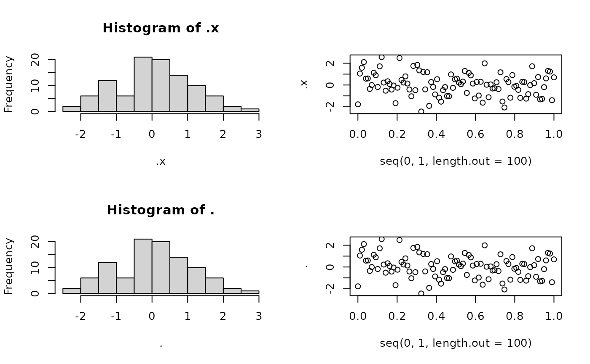

returns the first input with side effects
Details
no_op is a pipe-friendly function that takes any values in,
evaluate expressions but still returns input. This is very useful when
you have the same input across multiple functions and you want to use pipes.
.expr is evaluated with a special object '.', you can use
'.' to represent .x in .expr. For example, if
.x=1:100, then plot(x=seq(0,1,length.out = 100), y=.) is
equivalent to plot(x=seq(0,1,length.out = 100), y=1:100).
.check_fun checks whether .expr returns a function, if yes,
then the function is called with argument .x and ...
Examples
## 1. Basic usage
# Will print('a') and return 'a'
no_op('a', print)
#> [1] "a"
# Will do nothing and return 'a' because .check_fun is false
no_op('a', print, .check_fun = FALSE)
# Will print('a') and return 'a'
no_op('a', print(.), .check_fun = FALSE)
#> [1] "a"
## 2. Toy example
library(graphics)
par(mfrow = c(2,2))
x <- rnorm(100)
# hist and plot share the same input `rnorm(100)`
y <- x |>
# .expr is a function, all ... are passed as other arguments
no_op( hist, nclass = 10 ) |>
no_op( plot, x = seq(0,1,length.out = 100) ) |>
# Repeat the previous two plots, but with different syntax
no_op({ hist(., nclass = 10) }) |>
no_op({ plot(x = seq(0,1,length.out = 100), y = .) }) |>
# The return statement is ignored
no_op({ return(x + 1)})

# x is returned at the end
identical(x, y) # TRUE
#> [1] TRUE